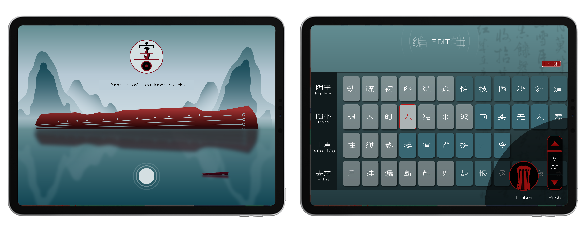

Poems as Musical Instruments:
AI Music Expression Interface Based on the Concept of Chinese Qin Song
Authors
- Songruoyao Wu (Zhejiang University) wsry@zju.edu.cn
- Jiaxing Yu (Zhejiang University) yujx@zju.edu.cn
- Kejun Zhang* (Zhejiang University) zhangkejun@zju.edu.cn
* Corresponding author.
Abstract
We designed a novel interface for music expression called Poem Qin, aimed at illuminating the interconnection between Chinese literature and music while facilitating the cross-media art practices. The interface embeds the musical principles of qin song into an AI generative model to facilitate the text-to-melody creation. Its interactive design draws inspiration from the qin song performances, integrating reading, singing, and playing into a single interface. User experiments involving both creators and audiences have demonstrated that it not only reduces the complexity of music composing and performance but also effectively promotes cross-media concept and approaches.
Research
Data Analytics
We summarized the musical principles in qin songs from the level of tones, phrases and sentences, and put forward a quantifiable theory of creation.
Creative Methods
Combined with AI models, we propose an automatic method for qin songs' composing, providing new practical ideas for text-to-melody generation.
Interactive Design
We designed a NIME (New Interfaces for Musical Expression) tailored for contemporary individuals and novice musicians，to promote cross-media music creation and performance.
Available Demo
We have released a trial version of Poem Qin, which includes some pre installed qin songs and supports the performance and personalized adaptation.
Qin Song Performance with Poem Qin
Cases of User Works
Case 1. Nangezi Theme: Rolling Milky Way in Sky
Case 2. Crossing Jingmen to Bid Farewell
Process of Music Creation
We designed a process to encourage users to show their own aesthetic and creativity. It includes Lyrics creation, style selection, melody generation, and melody editing. The user can turn on edit mode to view the pitch and timbre of each key and modify them.